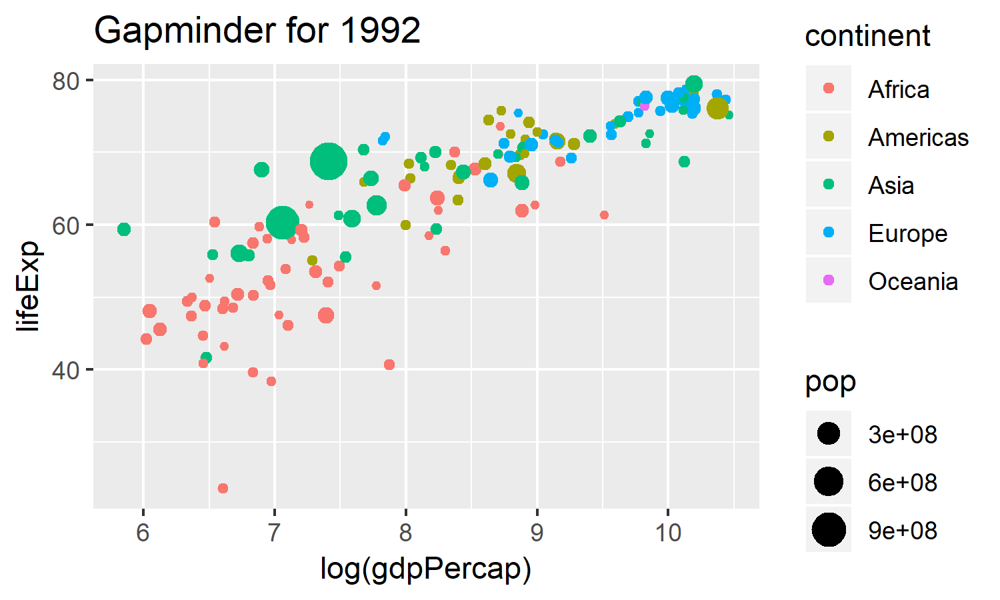

2 The Magic of {ggplot2}
2.1 data.frames and How to Use Them
Let’s review the basics of data.frames.
A data.frame is a table-like format which has the following properties:

- Columns can each have a different type (
numeric,character,boolean,factor) - Columns are called “variables”
- Rows correspond to a single observation (ideally)
- Can be subset or filtered based on criteria
Individual variables within a data.frame can be accessed with the $ operator (such as gap1992$pop). We won’t use this very often, as the tidyverse lets us access the variables without it, as you’ll see.
2.1.1 Exercise
- Run
colnames()andhead()on thegap1992data to see what’s in each column. - Then see how many rows there are in the dataset using
nrow(). Run these in console before you submit your answer.
##run head on gap1992
head(gap1992)
##run colnames here on gap1992
colnames(gap1992)
##run nrow() on gap1992
nrow(gap1992)2.2 Thinking about aesthetics
Now that we’ve learned a little about the data.frame, we can get to the fun part: making graphs.
The first thing we are going to is think about how we represent variables in a plot.
How do we visually represent a variable in our dataset? Take a look at this graph. What variable is mapped to y, and what is mapped to x, and what is mapped to color?

2.3 Mapping variables to produce geometric plots
A statistical graphic consists of:
- A
mappingof variables indatato aes()thetic attributes ofgeom_etric objects.
In code, this is translated as:
Let’s take the above example code apart. A ggplot2 call always starts with the ggplot() function. In this function, we need two things:
data- in this case,gap1992.mapping- An aesthetic mapping, using theaes()function.
In order to map our variables to aesthetic properties, we will need to use aes(), which is our aes()thetic mapping function. In our example, we map x to log(gdpPercap) and y to log(pop).
Finally, we can superimpose our geometry on the plot using geom_point().
2.3.1 Exercise
Based on the graph below, map the appropriate variables to the x, and y aesthetics. Run your plot. Remember, you can try plots out in the console before you submit your answer.
Hint: Look at the graph. If you need the variable names, they are listed below.
ggplot(data=gap1992,
mapping = aes(
x = log(gdpPercap),
y = lifeExp
)) +
geom_point()2.4 More about aes()
For geom_point(), there are lots of other aesthetics. The important thing to know is that aesthetics are properties of the geom. If you need to know the aesthetics that you can map to a geom, you can always use help() (such as help(geom_point)).
For a list of aesthetics for geom_point(), look here: https://ggplot2.tidyverse.org/reference/geom_point.html#aesthetics and look at all the aesthetic mappings. For example:
2.5 Aesthetics
geom_point() understands the following aesthetics (required aesthetics are in bold):
xyalphacolourfillgroupshapesizestroke
2.6 Quick Check
Which of the following is not a mappable aesthetic to geom_point()?
2.7 Points versus lines
The great thing about ggplot2 is that it’s easy to swap geometric representations. Instead of x-y points, we can plot the data as a line graph by swapping geom_line() for geom_point().
2.7.1 Exercise
First run the code to see the plot with points. Change the geom_point() in the following graph to geom_line(). What happened?
How did the visual presentation of the data change?
ggplot(gap1992, aes(x = log(gdpPercap), y = lifeExp, color=continent)) +
geom_line() 2.8 Geoms are layers on a ggplot
We are not restricted to a single geom on a graph! You can think of geoms as layers on a graph. Thus, we can use the + symbol to add geoms to our base ggplot() statement.
2.8.1 Exercise
Add both geom_line() and geom_point() to the following ggplot. Are the results what you expected?
ggplot(gap1992, aes(x = log(gdpPercap), y = lifeExp, color=continent)) +
## add code here
geom_line() + geom_point()2.9 Quick Check about ggplot2
What does the + in a ggplot statement do?
For example:
2.10 Final Challenge: Recreate this Gapminder Plot
Your final challenge is to completely recreate this graph using the gap1992 data.
- If you need to remember variable names, you can always call
head(gap1992)orcolnames(gap1992)in the console. - Recreate the above graphic by mapping the right variables to the right aesthetic elements. Remember, you can try plots out in the console before you submit your answer.
2.10.1 Exercise
ggplot(gap1992, aes(x = log(gdpPercap),
y = lifeExp,
color = continent,
size = pop
)) + ggtitle("Gapminder for 1992") +
geom_point()2.11 What you learned in this chapter
- Basic
ggplot2syntax. - Plotting x-y data using
ggplot2using bothgeom_point()andgeom_bar(). - Mapping variables in a dataset to visual properties using
aes() geoms correspond to layers in a graph.- That
ggplot2can make some pretty cool graphs - That you can do this!
More Resources
- R For Data Science: Visualization. The visualization chapter of R for Data Science. Especially useful are the Aesthetic Mapping and the common problems sections.
- There’s a lot more to
ggplot2! Take a look at The Layered Grammar of Graphics to see the other ways we can modify plots, such as scales and coordinates.